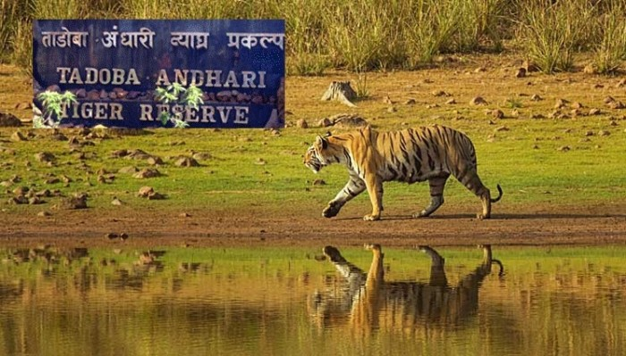

| HOME | NATIONAL PARKS IN MAHARASHTRA | FORTS IN MHARASHTRA | ANIMALS IN MHARASHTRA | FOOD IN MHARASHTRA | MUSIC IN MHARASHTRA | ART IN MAHARASHTRA | BIRDS IN MAHARASHTRA | LITERATURE IN MAHARASHTRA |
|  |
TADOBA NATIONAL PARKNotably Maharashtra's oldest and largest National Park, the "Tadoba National Park", also known as the "Tadoba Andhari Tiger Reserve" is one of India's 47 project tiger reserves existing in India. It lies in the Chandrapur district of Maharashtra state and is approximately 150 km from Nagpur city. The total area of the tiger reserve is 1,727 Sq.km, which includes the Tadoba National Park, created in the year 1955. The Andhari Wildlife Sanctuary was formed in the year 1986 and was amalgamated with the park in 1995 to establish the present Tadoba Andheri Tiger Reserve. The word 'Tadoba' is derived from the name of God "Tadoba" or "Taru," which is praised by local tribal people of this region and "Andhari" is derived from the name of Andhari river that flows in this area |
SANJAY GANDHI NATIONAL PARKSanjay Gandhi National Park is a 87 km2 (34 sq mi) protected area near Mumbai in Maharashtra State in India that was established in 1996 with headquarters in Borivali.[1] It is notable as one of the major national parks existing within a metropolis limit and is one of the most visited parks in the world. The rich flora and fauna of Sanjay Gandhi National Park attracts more than 2 million visitors every year. Tourists also enjoy visiting the 2400-year-old Kanheri caves sculpted out of the rocky cliffs which lie within the park. |
|
KARNALA BIRD SANCTUARYThe Karnala Bird Sanctuary is located in Panvel Taluka of Raigad District, outside Mumbai, India near Matheran and Karjat. The sanctuary is quite small with an area of 12.11 square kilometres but along with the Sanjay Gandhi National Park and Tungareshwar sanctuary is one of the few sanctuaries to be within reach of the city of Mumbai. |
|
BHIMASHANKAR WILDLIFE SANCTUARYOriginally to safeguard the natural habitat of the endemic species, Indian Giant Squirrel, Bhimashankar Wildlife Sanctuary has now become a major tourist attraction of Pune and Maharashtra on the whole. The densely forested area is spread over an area of 120 sq km on the Western Ghats, also known as the Sahyadri Ranges. The place is mainly famous for being a home to many endemic and pandemic animal and bird species including the Indian Giant Squirrel. It is so rich in flora and fauna that it is considered to be one of the biodiversity hotspots of the world. The reserve is also known for being the home of 14 sacred groves which are said to be thousands of years old and responsible for the origin of many species.The forest sanctuary seems to have something for everyone. You can enjoy trekking through the well-marked and safe routes within the dense forests, taking in the sheer beauty of nature and experiencing it from close quarters. Anyone is allowed at any time, but with permission of the authorities and certified guides, that too in certain places after sunset, for obvious reasons.If walking is not your forte, you can always opt for the safari car rides and have a glance at the wilderness in its true form from within the safety of the car. In case you are a spiritual person, one of the 12 Jyotirlingas (major shrines of Lord Shiva) is situated within the large stretch of the jungle. There are areas of the forest that are ideal for a day's picnic too. In short, Bhimashankar Wildlife Sanctuary is the perfect choice for a quick and eventful weekend trip. |